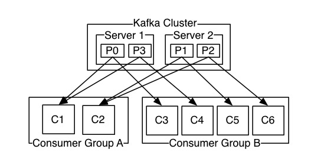

1 基本概念
- 消息：kafka的数据单元
- 主题：kafka中的每个消息都属于一个
主题 - 分区：分区是消息存储的物理单元，一个主题中的消息，通过
分区器的作用存储在不同的分区中。同一个主题的多个分区，可能分布在不同的机器上。 - 生产者：将一个消息发送到某个主题的分区中
- 消费者：消费者消费分区中的消息，通过
偏移量来保证顺序消费某个分区中的消息。 - 消费者群组：消费者是以消费者群组的形式存在的，消费者群组中有一个或者多个消费者，一个指定的消费者群组会订阅一个主题。群组保证每个分区只能被一个消费者使用。
- broker：一个部署了kafka服务的服务器被称为一个broker。每个集群中都会有一个充当集群控制器的broker。在集群中一个分区从属于一个broker，该broker被称为分区的
首领。一个分区可以分配给多个broker。 - 保留消息：kfka通过某种策略来对消息进行保留。
2 kafka的特性
- 多个消费者：与其他的消息队列不同，消息一旦被一个客户端读取，其他的客户端就无法在读取它。kafka的消息可以被多个消费者读取。
- 基于磁盘的数据存储：kafka允许消费者，非实时的进行消息的读取。消息被提交到磁盘，根据设置的保留规则进行保存。每个主题都可以设置单独的保留规则
3 安装和部署
kakfa使用zookeeper来保存集群的元数据信息和消费者消息。
使用进行安装部署，docker-compose.yml文件内容入如下：
1 | version: '2.1' |
4 kafka生产者
1 | public class Demo { |
5 kafka消费者

参考文章